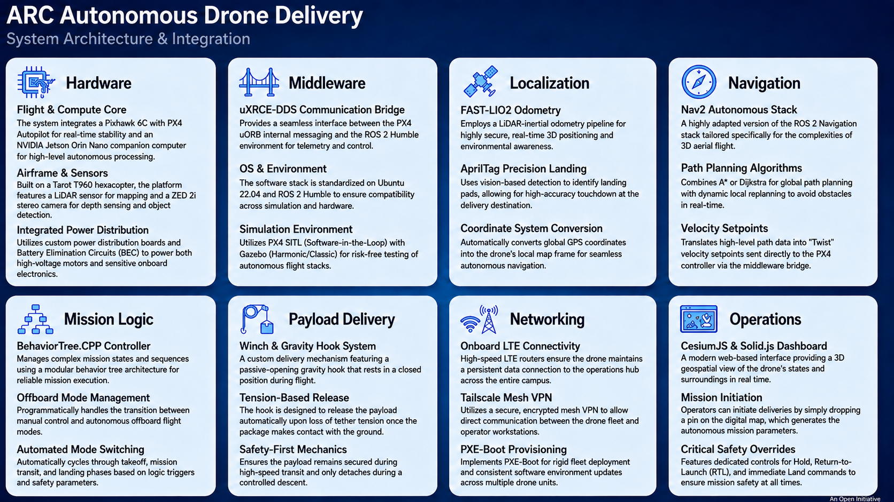
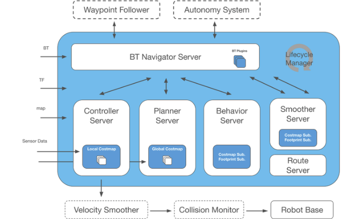
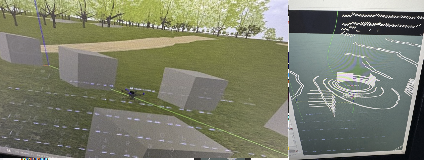
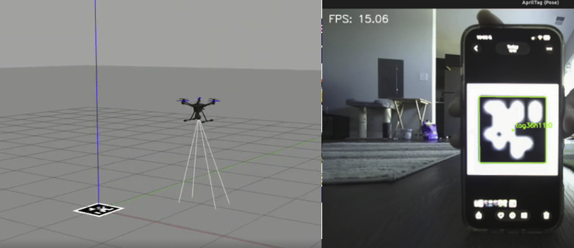

Problem
Campus-scale autonomous drone delivery needs a full stack (perception, mission logic, navigation, and precision landing) that a rotating student team can develop and test safely in simulation before flight.
Architecture
- Hardware: Tarot T960 hexacopter, Jetson Orin Nano companion computer + Pixhawk 6C, LiDAR, LTE connectivity for campus-wide operation
- Localization: FAST-LIO2 LiDAR-inertial odometry
- Mission logic: BehaviorTree.CPP orchestrator (TAKEOFF → SEARCH → APPROACH → DESCEND → LANDED)
- Navigation: Nav2 · Landing: AprilTag precision landing
- Middleware: uXRCE-DDS bridge (replaced deprecated MAVROS)
My contributions
- Finalized the hexacopter hardware architecture and connectivity design
- Consolidated the simulation repo into the team monorepo, resolving nested git/submodule issues
- Set up PX4 SITL pipelines; currently migrating Gazebo Classic → Gazebo Harmonic
- Debugged PX4 preflight/arming gates (GCS heartbeat requirement) and DDS topic versioning issues; fixed rotor pose bugs in the simulation vehicle model
- Verified companion-computer integration: Jetson ↔ Pixhawk over UART with PX4 topics streaming via uXRCE-DDS
- Structured the team into navigation, landing, and electronics/mechanical subteams; training the incoming software lead
Results



What I'd change
I'd focus more on recruiting last year so I wasn't the main software person on the team. Spreading that load earlier would have let the navigation and landing subteams move faster without bottlenecking on me.